Coat of Arms for Peace?
© Wundersaar
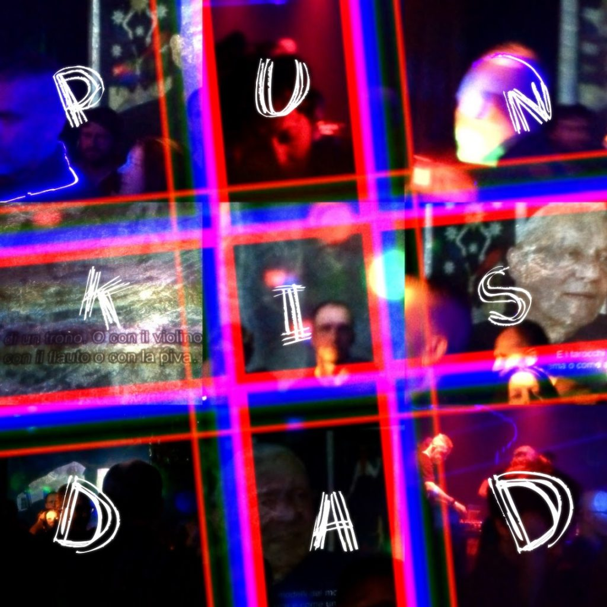
clubbed screening of ugo dossi
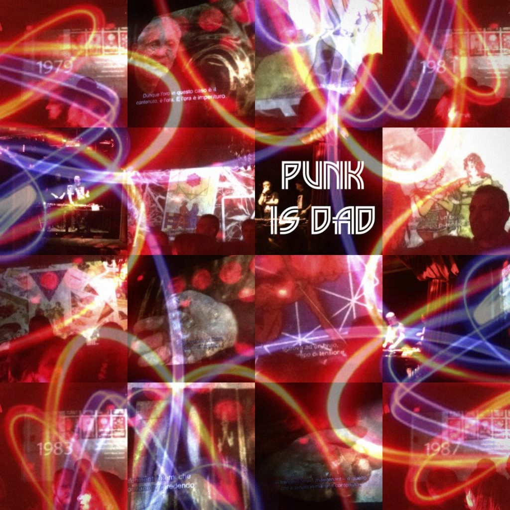
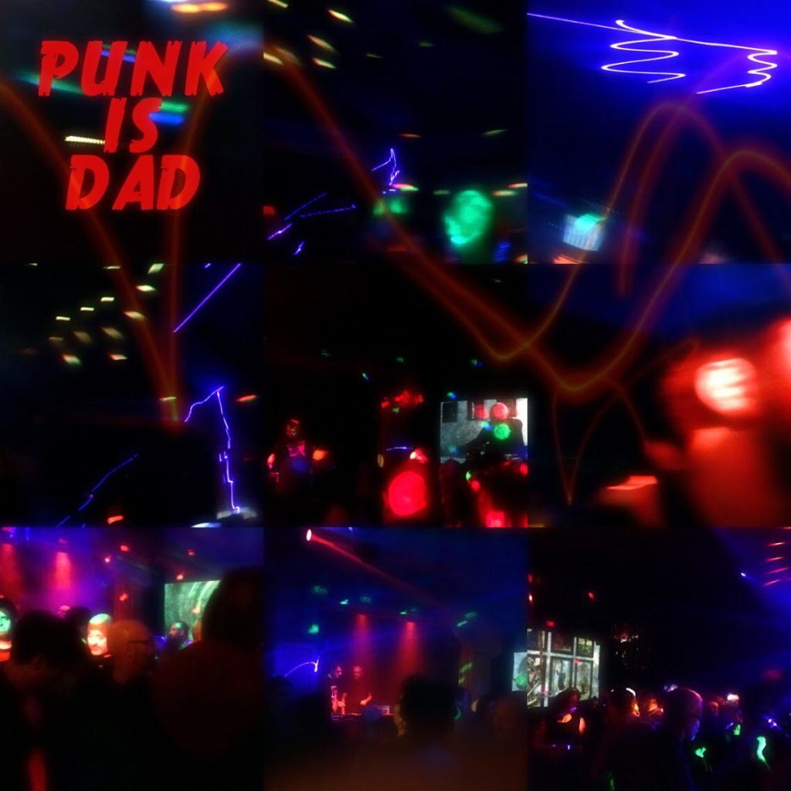
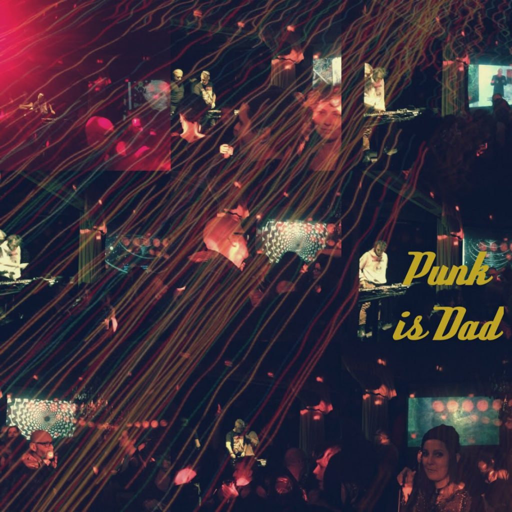
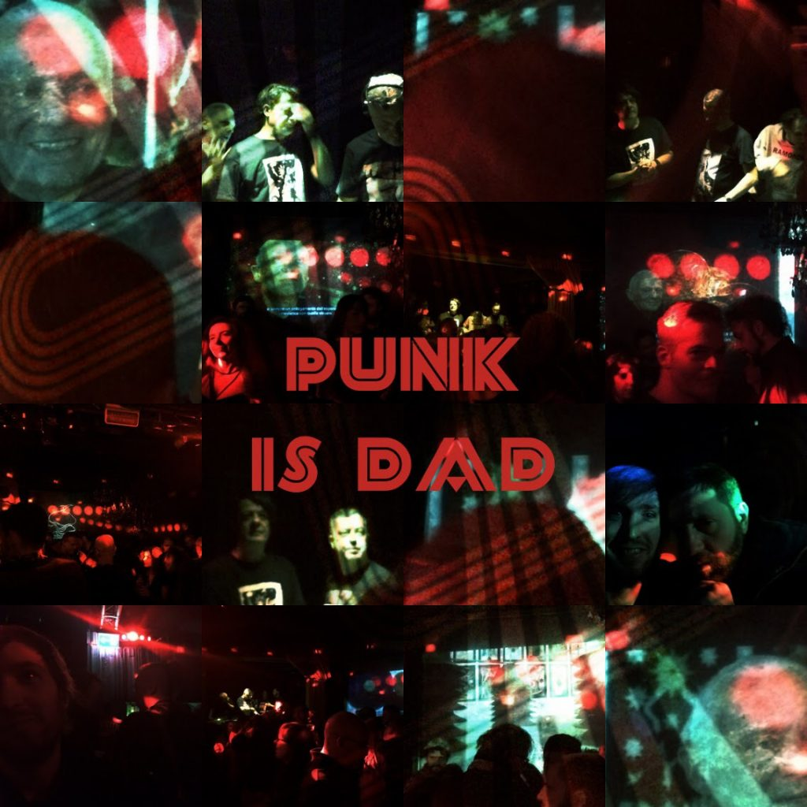
© Wundersaar

Cinémathèque suisse

© Wundersaar
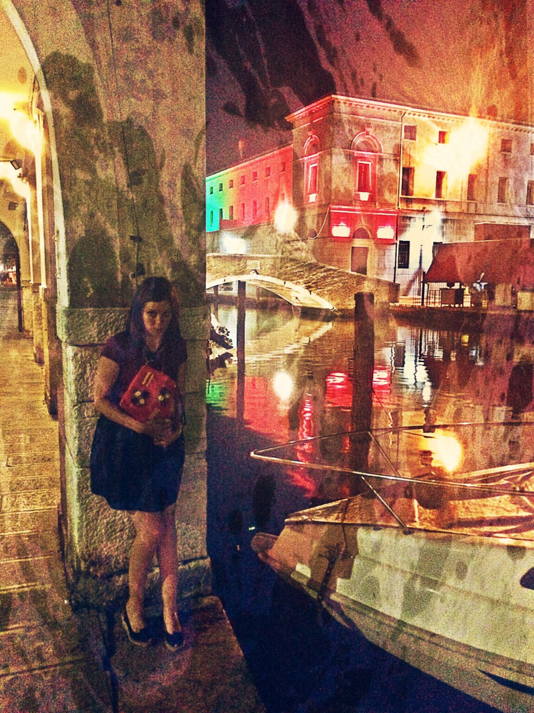
Chi-ho-ggià…
© Wundersaar

Charme d’irredentismo ante litteram
Nei Colli Euganei, luogo un tempo d’elezione di patrizi veneziani, sebbene non fosse ancora autunno, per brevi istanti quasi percepibili le lacrime di Jacopo Ortis perpetuamente in tempesta
disperate omeopaticamente disperse in acque termali che fenditure nel terreno vollero diffondere sovra i mortali le cure della divinità per mezzo di acque benefiche, sgorganti dalla terra esultante di piacere, senza che queste riuscissero ad annacquare il sentimento che [lo]infiamma[va], il languido fraseggiamento del poeta commosso dalle “chiare, fresche, dolci acque” di petrachesca memoria e dalle acque salate dalla cui sciuma nacque Venere, nell’onde del greco mar.
L’hotel Ritz ogni anno mi manda per Natale auguri vergati su un bel cartonicino che sa d’acqua santa e tutti umidi di rugiada.
© Wundersaar
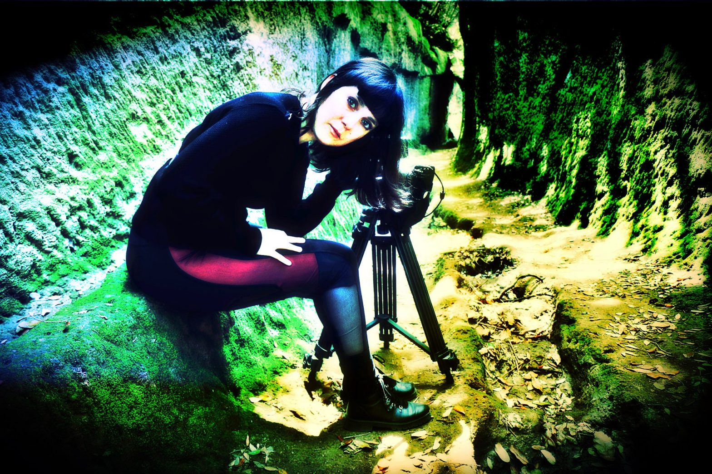
Cave girl
Capturing the remnants of a farseeing past: the excavated Etruscan roads, their enigmatic sacred path connecting above, the necropolis, where men rest and below, the villages where men live, heaven and earth.
© Wundersaar

(cat-à-rifrangente)
(The title of this post is a play on words starting from an adjective in Italian which translated into English does not lend itself to the play on words instead existing in a mixed mental language, in this case between Italian and English. It is the adjective “reflector”, in English, “retro-reflective”, “high-visibility”, or considering it a name, “reflector”, but also “cat’s-eye”. Hence the cat, that exists although only in English in the word in Italian but missing completely in the English translations of the word as an adjective reappearing instead in the translation of this as a name. Yes! There remained an “a” between “cat” and “refracting”, why not use the French preposition “à” (: on, by) to mix things up a little more?)
© Wundersaar

Brazil Blinds
© Wundersaar

Born in Milan
Nata ma cresciuta a Milano se non dalla fine fine dell’asilo a fino poco dopo aver raggiunto la maggiore età solo un fine settimana al mese o durante le festività, ci sono tornata per l’università e perché mi era chiaro che lì volevo trascorrere i miei anni formativi da giovane adulta. ripartendo più volte per le città che non potevo mancare. Da allora l’ho lasciata molte volte, ma sempre e solo per altre città che non potevo perdermi. Georgia on my mind diceva quello, Milan on mine, e così per sempre. Al momento sto cercandovi un minuscolissimo pied-à-terre molto “tac”, se avete da propormi qualcosa fatelo utilizzando il contact form qui – mica posso cercarmi le robe su airbb come una turista qualsiasi qualunque…
Born but raised in Milan after the end of the kindergarten and until shortly after I reached the age of majority only one weekend a month or during the bank holidays, my comeback there was officially due to the university, indeed it was clear that I wanted to spend my formative years as a young adult there. Since then I have left the city many times, although always only for other cities that I could not miss. Georgia on my mind Ray Charles said, Milan on mine, and so forever. At the moment I’m seeking there a very compact miniature of a pied-a-terre, a slick pad and if you have something to propose to me just do it using the contact form here 😉 you do not want to make me look for places on Airbnb like a tourist any…
© Wundersaar
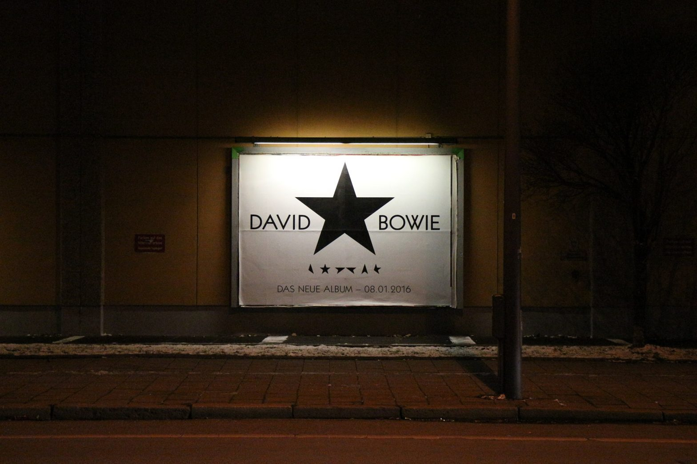
Blackstar
The Next Day, perhaps Hours, a hard Reality Outside Tonight without The Man Who Sold The Word alias Ziggy Stardust
© Wundersaar

Beyond The Unheimlich
Wundersaar and the Lake Como.
When she was a child, the journey from Milan to the final destination in Val d’Intelvi inevitably led her to suffer the car on the Via Regina, always near Laglio & Co., she had a strange feeling of badness and she seemed to have to puke. Now, the question is, according to Fisher, is that weird or eerie?
(The Weird and The Eerie, Mark Fisher, 2015)
The spectre of a world that could be free
(Eros and Civilisation: A Philosophical Inquiry into Freud, Herbert Marcuse, 1955)
© Wundersaar

Bâtisseur de fantasmes
© Wundersaar

barche salvifiche
a 16 mm gif against salvini’s chauvinism (#carolaracketeforcaptain)br>
© Wundersaar

Bamberg Mon Amour – Gemäldegalerie
© Wundersaar

BambE(ne)rgischer reFLEKTIONEN
© Wundersaar

Awakening into the Daydream
© Wundersaar

Athanasius Kircher’s prophecy ft. some Italian reflections of mine on COVID-19
Complotto senza plot, cospirazione che lascia spirare, poco sperare, sparire piuttosto, disperatamente, insperatamente nuovamente inspirare, semmai, spiraglio, spiritati brancolando dopo il tunnel le spire strette. Morire, dormire. Dopo il tunnel il ponte crollato, dopo il coma ricostruito. Le spirali burocratiche allentate, appalti bypassati, modello statuito. Si chiama Genova. In Liguria abbiamo un problema. Il basilico invenduto. In Sicilia, il traffico, diceva Johnny in un altro film. No, non è lo scudo penale evocato dal governatore regionale come lo spirito di una lentezza mediterraneamente nordica che di nordico ha poco se non il trend nel numero dei contagiati. Ma la Liguria è trasparente come le sue spiagge dimagrite. Mica come il Molise che non esiste e che a detta del governatore mediterraneamente nordico ha solo fiumare e spiagge di fiume. No, non è pervenuta nonostante indici di contagio da terza della classe, Rcon(0) anarchico come liguri teorici del Risorgimento. L’ira funesta contro i foresti, il popolo delle seconde case, il popolo delle pianure nonostante le colline, della nebbia assassina, loro in Liguria l’han sempre saputo che fossero solo di guai forieri. Ma ora, spostiamoci e partite. Ma prima, le nuove disposizioni nonostante le indisposizioni. Quali sintomi ha la sua di indisposizione? Anzi, mi dica semplicemente quanti. Non li legge i giornali? Basta così! Covid, dammi il tuo ID, eius, eo, id, eo, ciò, fammi vedere che devo co(n)dividere, anzi, senza con, solo dividere, et imperare, che imparino a con-vivermi, io da solo non ho vera vita, sono un parassita, un virus senza qualità, pura intenzione, riproduzione in autonomia, il mio sogno coronato, costernato di fronte ad un attacco pentastellato. Vis, roboris, che la forza sia con me, che sono letale, vi mando in ospedale.
Apocalittici o integrati, ora tutti disperati, nell’ora della verità. Saltano le categorie come i nervi, tutto ciò che è solido si dissolve nell’aria, questa considerazione marxiana non sfuggirà alla prova epidemiologica, fino a prova contraria, che tuttavia non lascerà che contrariati. Intanto abbassate la voce, ce ne sono i motivi, parlare alto produce più fiato, anche i felini, disturbati, se ne stiano schisci, che quando soffiano partecipano come i pollini a far girare i turbini. Salto di specie addomesticato. La Cina è micina. Non tirate loro la coda, tirate la corda no. Che si spezza, come l’incantesimo di un mondo fa. Che era almeno edulcorato, seppur non ci sia del tutto piaciuto. Il comune di Medicina, zona rossa in una regione rossa come la nota repubblica nientepopodimeno che dalla bandiera rossa; e gialla come la febbre. Che popolare sarà solo nei suoi sogni, ormai incubi di tutti. Dormire, forse sognare. La Cina è vicina, piuttostosìanzichéno. The Coming Race, viene da Agartha luogo elettivo del Re del Mondo, al Secolo – d’Italia o XIX? – Xi Jinping, pong.
All’oggi, del mercato la fine non è ancora in vista, come diceva uno che di postmoderno scriveva, è più probabile assistere alla fine del mondo che che alla fine del capitalismo. Nous n’avons jamais été modernes. A torto o ragione sono il primo virus postmoderno, costruito come un patchwork con genomi di virus già esistenti, ma mi muovo internamente ad una costellazione nuova di pacco. E Sta pandemia è proprio un pacco di proporzioni gigantesche che nemmeno Amazon ti recapita più – al momento si curano solo di prodotti medicali – una “sola” come dicono a Roma. Si vede si pensava che società dell’informazione coincidesse con il venir informati e per tempo.
E stiamo come d’autunno d’estate. The End of (Hi!)story and the Last Men, fa anch’esso parte delle letture vintage da consigliare a complottisti tra il 4.0 e il 5G.
© Wundersaar

Arts et métiers
© Wundersaar

Arm the armoured rhinoceros
Like the Dürer’s rhinoceros – that died in a shipwreck in the Tyrrhenian Sea, precisely in the Spezia Gulf, transported from Portugal to Italy, this is instead very much alive, facing the Adria Sea in the Venetian Lagoon – he shares the same destiny of a sightseening animal, a wondreous. But better days are coming, days of revenge, better days for wondrous transformer rinoscheroses…
“Un rinoceronte cammina la notte sull’acqua della Laguna torrendo parole al vento, in cerca di miglior fortuna si sfoga con la luna. La sua sagoma è fatta di lucido metallo, un giorno, presto capirà di aver preso un abbaglio, cosa sarà mai una recinzione, cosa sarà mai una nazione per l’animale più pesante del mondo, transformer di metallo per di più, quindi armato, darà seguito al suo destino già segnato, sì, di grandi viaggi, che non si scoraggi, armerà una flotta e inizierà la sua vera lotta, lo porterà lontano, molti gli daranno una mano, armata, che tremino già i codardi le cui retine verran trafitti dai dardi riflessi sulle lamine lucenti di questo rinoceronte transformer diretto discendente di quello detto del Dürer.”
© Wundersaar

Archangel-backed
The pic was taken in the toilet on the parterre of a 5 stars hotel where my guests didn’t sleep because we couldn’t manage to reach in time the last ferry-boat crossing the Rhein river. In that toilet, I had an epiphany of the Saint Michael Archangel.
© Wundersaar
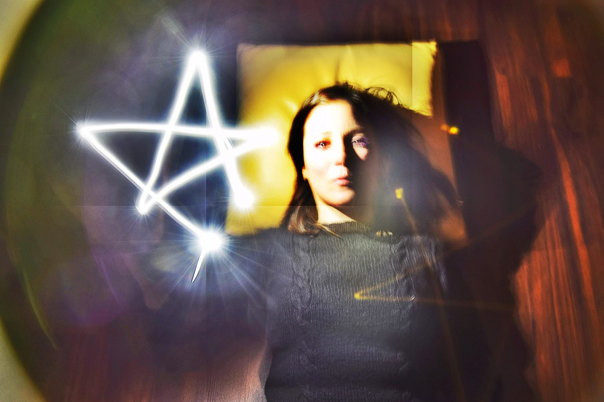
Apotropaically
© Wundersaar

Animated memento mori
© Wundersaar
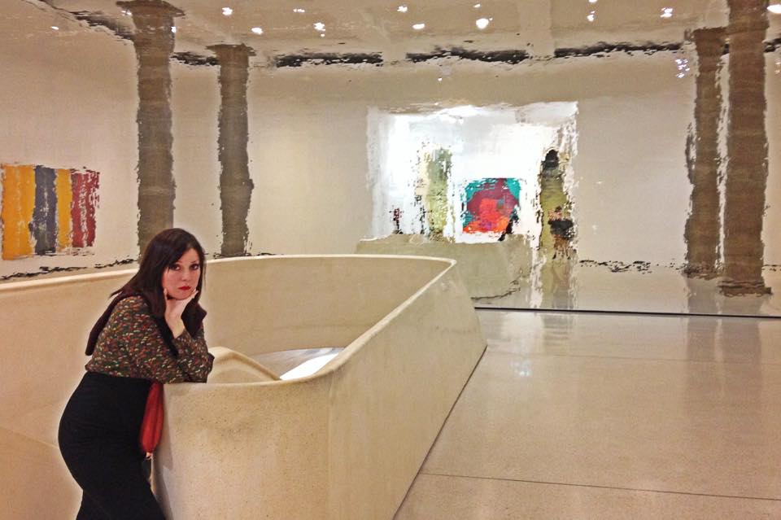
a(MUSE)d
From 2010 to 2015 my career problem has been “how can I infiltrate the art trade? What should be my strategy to become a lateral entry/later entrant/ or in that branch? How can I make my academic background in Sociology together with my crossover talents and other accomplishments distinguishable in order to work as an art appraiser without recommencing from a bachelor in fine arts and apprenticing somewhere? Then, I suddenly got enlightened. Discover what I designed to go out of that impasse – the answer is hidden a commentary in one of pics here… (Here, at Städel in Frankfurt)
© Wundersaar

Amaterasu – primordial Japanise goddess of the sun
© Wundersaar
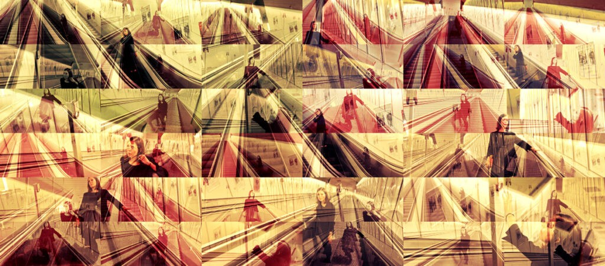
Alone on the Social escalator
© Wundersaar

algalgia
In front of the Venetian Island of San Giorgio in Alga…
© Wundersaar
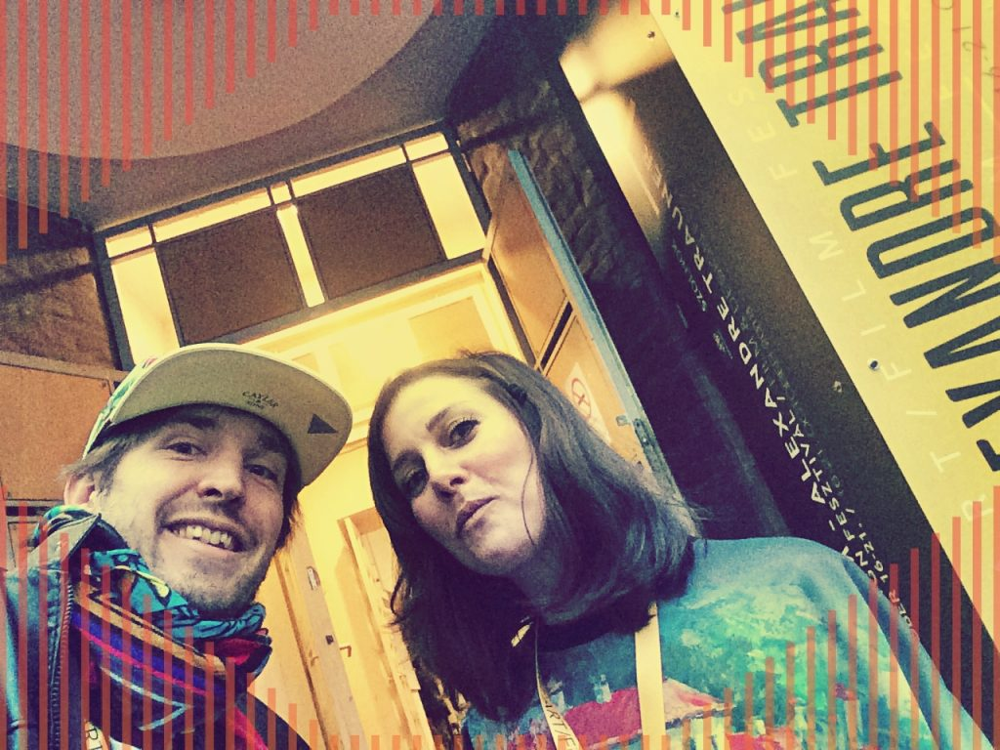
Alexandre Trauner Film Festival
A mature and perhaps for this very reason nurturing festival, the same very young in spirit. No matter if you are a fledgling or seasoned filmmaker, you will terribly benefit in term of inspiration with the overflowing programme, a cultivated and refined selection of films of every length and genres – yet all following an intriguing fil rouge around fine arts and every year with a special regard (2018 it was the eye for Production Design) – and the extraordinary masterclasses (we could attend lectures/shows by Rajak Laszlo, Allan Starski and Peter Greenaway). The atmosphere is sophisticated yet cheerful, veracious and genuine. The evenings are highly enjoyable with a diverse musical offer stretching from the impressive local orchestra of Szolnok performing soundtracks and film scores to truly uproarious guest bands. The venue is brilliant in its beauty – quite both mutually in front and inside an old, beautifully lightened synagogue and the theatrical premises comprehensive of a bar and of the main cinema and another comfortable little theatre; between the two buildings a perfect patio on a tiny square for amiable conversations and interesting networking. All that spiced with the great hospitality and kindness of the staff and all the organization members. Great event – we were really proud to have the international premiere of our feature documentary “Ugo Dossi: Art and Space” at this fantastic film festival – loved it sincerely!
Sara and Chris
© Wundersaar

Acid Gravure
© Wundersaar
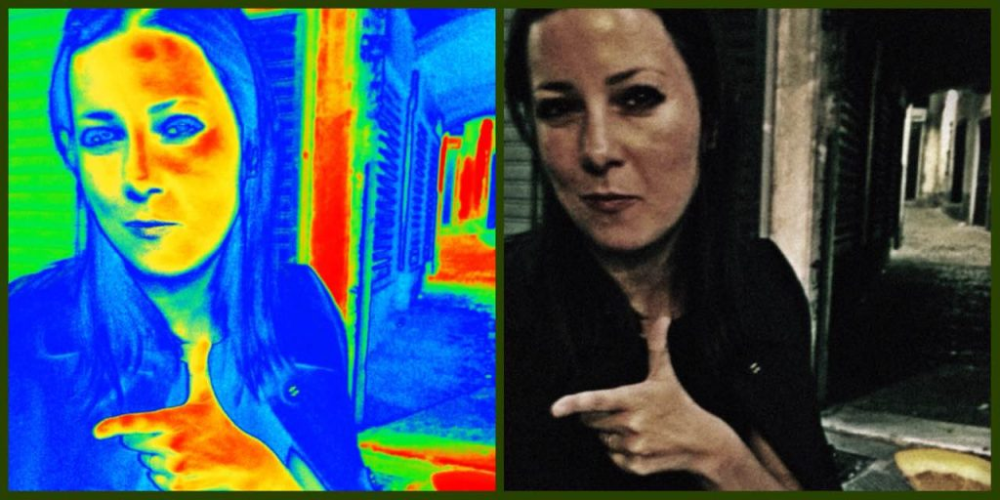
Achtung Baby
© Wundersaar

A.L.A.I. – Mostra Internazionale Libri Antichi e di Pregio a Milano
I was honored to be a media partner for the 2017 edition of the ALAI bibliographic fair held in the Salone dei Tessuti in Via San Gregorio in Milan. here some impressions of the precious rare books.
© Wundersaar

A character from history that you would like to meet
© Wundersaar

80 voglia di… ovvero le magliette maliziose degli anni ’80
Di magliette pitturate su Filo di Scozia Made in Italy
Diverse da quelle vendute sul lungomare contraffatte di fashion system al suo climax e già in malora
Mi piacevano anche senza remore le fluorescenze da indossare di cotone
E le felpe con le stampe, rusches
© Wundersaar

The VVitch with the Nazar
Shake the VVitch out of you, manifest her
© Wundersaar

Il posto delle fragole
Un posto segreto lassù in Val d’Intelvi. Al confine. Tra prati smeraldo e riflessi di lago. Una locanda, vicino a uno dei posti che a turno chiamo casa.
© Wundersaar

Kunst für Kino
Eine nackte, schreiende Frau schließt Francis Bacon in einen engen, perspektivisch konstruierten Raum. Bildvorlage ist eine Filmszene aus Sergej Eisensteins Panzerkreuzer Potemkin, in welchem der Angriff auf Zivilisten in Odessa 1905 der Auslöser dieses Schreis ist. Francis Bacon entfernt in seiner Malerei die erzählerischen Momente, die Figur wird zum abstrakten Träger von Schmerz. Die von ihm veranlasste Verglasung der Leinwand wirft den Betrachter durch die Spiegelung auf sich selbst zurück, erlaubt ihm zugleich etwas Distanz zu diesem existenziellen Schrei.
Studie für die Krankenschwester in dem Film “Panzerkreuzer Potemkin”, Francis Bacon, 1957 (Städel, Frankfurt)
© Wundersaar

Verso Lutetia
Il treno di notte che è già giorno e già Francia dormiente
solo un corridore e me desti veramente
lui lungo la traiettoria dei binari
io rincorro giallo–blu scenari
lui delle mie impressioni più celere e celeste
io del suo sfuggirmi più Cerere e terrestre
Prima di Parigi, medio raggio lontana
la veduta di prima ancor notte e ancora più montana
Forse eran monti che manco eran colline
forse son lì solo non tutte le mattine
Meno dell’Italia mi pare aver la Francia
meno di che cosa dice già stizza di pancia
meno di niente meno di zero
infatti era un complimento
© Wundersaar

1. Mai – Kampftag gegen Krieg
© Wundersaar